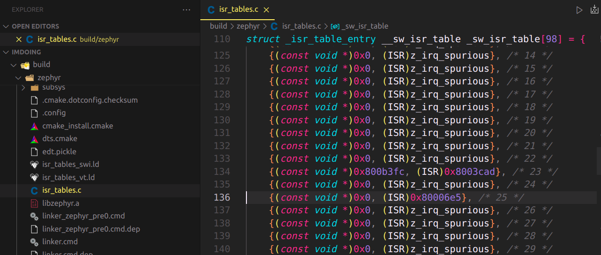
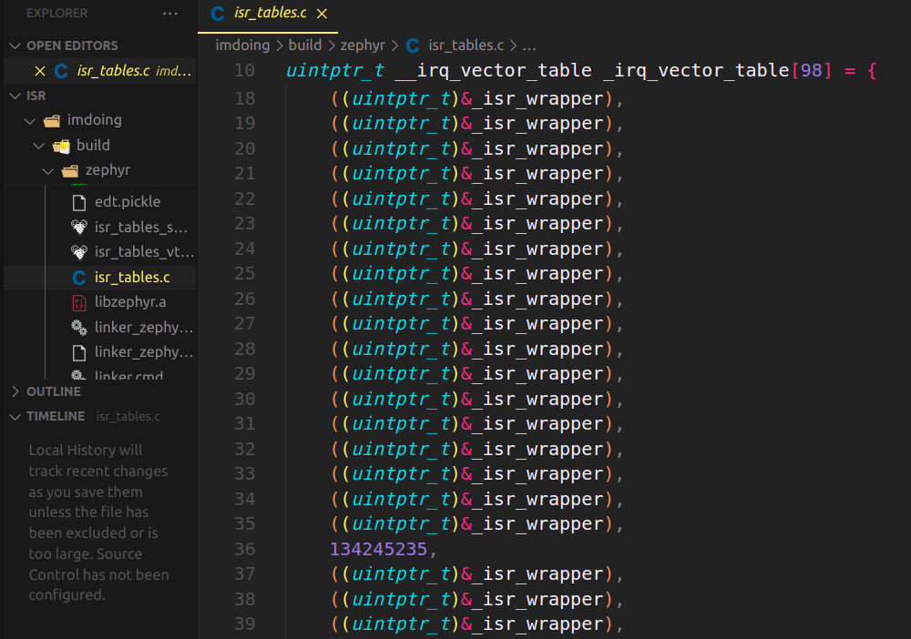
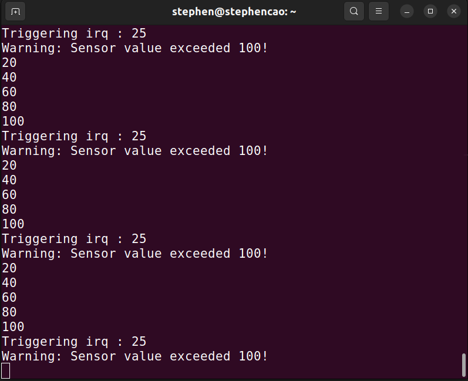
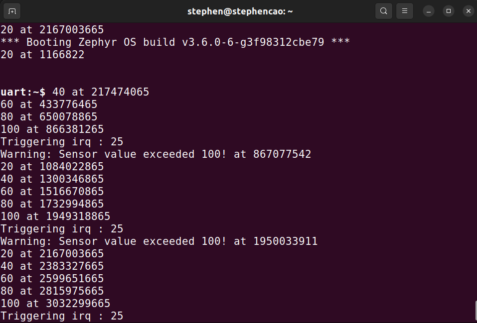
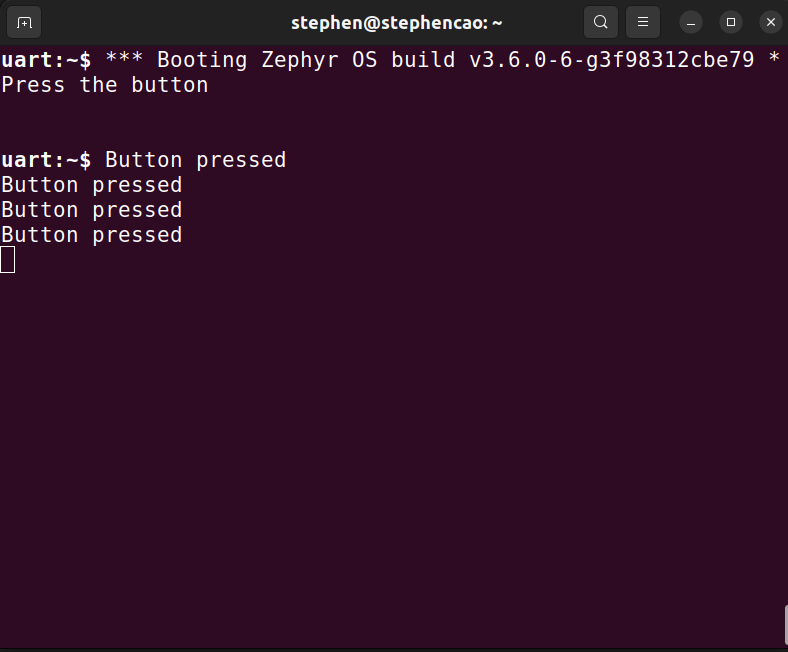
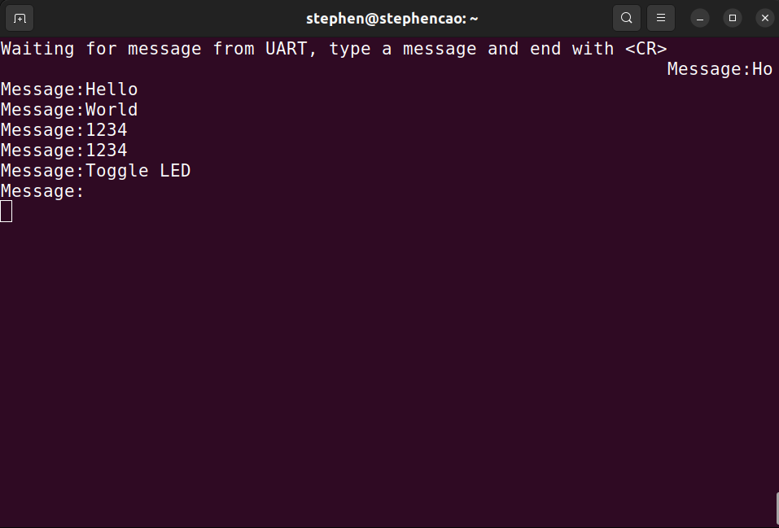

Thực hành
1. Bảng Vector Ngắt - ex_vector
Thử tạo Ngắt Thông thường hoặc Ngắt Trực tiếp. Sau đó xác nhận rằng Ngắt Thông thường hoặc Ngắt Trực tiếp có hay không xuất hiện trong file Config khi Compile, xuất hiện trong trình Debug.
Ghi chú
Device được đăng ký với mã là 25
Đối với Ngắt Thông thường:

Đối với Ngắt Trực tiếp:

2. Kích hoạt một Ngắt - ex_trigger
Thông thường, các Ngắt của Zephyr đã được API hóa một cách chặt chẽ. Vậy nên muốn kích hoạt Ngắt của Zephyr phải đảm bảo thiết bị/ngoại vi rườm rà. Tuy nhiên, trong bài tập dưới đây, hàm trigger_irq(isr_device_code) sẽ được cung cấp, thuộc thư viện #include "interrupt_util.h", với tác dụng giúp chúng ta kích hoạt ngắt để xem kết quả.
Ghi chú
Cho thư viện interrupt_util.h
/*
* Copyright (c) 2018 Intel Corporation
*
* SPDX-License-Identifier: Apache-2.0
*/
#ifndef INTERRUPT_UTIL_H_
#define INTERRUPT_UTIL_H_
#define MS_TO_US(ms) (ms * USEC_PER_MSEC)
#if defined(CONFIG_CPU_CORTEX_M)
#include <cmsis_core.h>
static inline uint32_t get_available_nvic_line(uint32_t initial_offset)
{
int i;
for (i = initial_offset - 1; i >= 0; i--) {
if (NVIC_GetEnableIRQ(i) == 0) {
/*
* Interrupts configured statically with IRQ_CONNECT(.)
* are automatically enabled. NVIC_GetEnableIRQ()
* returning false, here, implies that the IRQ line is
* either not implemented or it is not enabled, thus,
* currently not in use by Zephyr.
*/
/* Set the NVIC line to pending. */
NVIC_SetPendingIRQ(i);
if (NVIC_GetPendingIRQ(i)) {
/*
* If the NVIC line is pending, it is
* guaranteed that it is implemented; clear the
* line.
*/
NVIC_ClearPendingIRQ(i);
if (!NVIC_GetPendingIRQ(i)) {
/*
* If the NVIC line can be successfully
* un-pended, it is guaranteed that it
* can be used for software interrupt
* triggering. Return the NVIC line
* number.
*/
break;
}
}
}
}
return i;
}
static inline void trigger_irq(int irq)
{
printk("Triggering irq : %d\n", irq);
#if defined(CONFIG_SOC_TI_LM3S6965_QEMU) || defined(CONFIG_CPU_CORTEX_M0) \
|| defined(CONFIG_CPU_CORTEX_M0PLUS) || defined(CONFIG_CPU_CORTEX_M1)\
|| defined(CONFIG_ARMV6_M_ARMV8_M_BASELINE)
/* QEMU does not simulate the STIR register: this is a workaround */
NVIC_SetPendingIRQ(irq);
#else
NVIC->STIR = irq;
#endif
}
#elif defined(CONFIG_GIC)
#include <zephyr/drivers/interrupt_controller/gic.h>
#include <zephyr/dt-bindings/interrupt-controller/arm-gic.h>
static inline void trigger_irq(int irq)
{
printk("Triggering irq : %d\n", irq);
/* Ensure that the specified IRQ number is a valid SGI interrupt ID */
zassert_true(irq <= 15, "%u is not a valid SGI interrupt ID", irq);
/*
* Generate a software generated interrupt and forward it to the
* requesting CPU.
*/
#if CONFIG_GIC_VER <= 2
sys_write32(GICD_SGIR_TGTFILT_REQONLY | GICD_SGIR_SGIINTID(irq),
GICD_SGIR);
#else
uint64_t mpidr = GET_MPIDR();
uint8_t aff0 = MPIDR_AFFLVL(mpidr, 0);
gic_raise_sgi(irq, mpidr, BIT(aff0));
#endif
}
#elif defined(CONFIG_ARC)
static inline void trigger_irq(int irq)
{
printk("Triggering irq : %d\n", irq);
z_arc_v2_aux_reg_write(_ARC_V2_AUX_IRQ_HINT, irq);
}
#elif defined(CONFIG_X86)
#ifdef CONFIG_X2APIC
#include <zephyr/drivers/interrupt_controller/loapic.h>
#define VECTOR_MASK 0xFF
#else
#include <zephyr/sys/arch_interface.h>
#define LOAPIC_ICR_IPI_TEST 0x00004000U
#endif
/*
* We can emulate the interrupt by sending the IPI to
* core itself by the LOAPIC for x86 platform.
*
* In APIC mode, Write LOAPIC's ICR to trigger IPI,
* the LOAPIC_ICR_IPI_TEST 0x00004000U means:
* Delivery Mode: Fixed
* Destination Mode: Physical
* Level: Assert
* Trigger Mode: Edge
* Destination Shorthand: No Shorthand
* Destination: depends on cpu_id
*
* In X2APIC mode, this no longer works. We emulate the
* interrupt by writing the IA32_X2APIC_SELF_IPI MSR
* to send IPI to the core itself via LOAPIC also.
* According to SDM vol.3 chapter 10.12.11, the bit[7:0]
* for setting the vector is only needed.
*/
static inline void trigger_irq(int vector)
{
uint8_t i;
#ifdef CONFIG_X2APIC
x86_write_x2apic(LOAPIC_SELF_IPI, ((VECTOR_MASK & vector)));
#else
#ifdef CONFIG_SMP
int cpu_id = arch_curr_cpu()->id;
#else
int cpu_id = 0;
#endif
z_loapic_ipi(cpu_id, LOAPIC_ICR_IPI_TEST, vector);
#endif /* CONFIG_X2APIC */
/*
* add some nop operations here to cost some cycles to make sure
* the IPI interrupt is handled before do our check.
*/
for (i = 0; i < 10; i++) {
arch_nop();
}
}
#elif defined(CONFIG_ARCH_POSIX)
#include <zephyr/arch/posix/posix_soc_if.h>
static inline void trigger_irq(int irq)
{
posix_sw_set_pending_IRQ(irq);
}
#elif defined(CONFIG_RISCV)
#if defined(CONFIG_NUCLEI_ECLIC)
void riscv_clic_irq_set_pending(uint32_t irq);
static inline void trigger_irq(int irq)
{
riscv_clic_irq_set_pending(irq);
}
#else
static inline void trigger_irq(int irq)
{
uint32_t mip;
__asm__ volatile ("csrrs %0, mip, %1\n"
: "=r" (mip)
: "r" (1 << irq));
}
#endif
#elif defined(CONFIG_XTENSA)
static inline void trigger_irq(int irq)
{
z_xt_set_intset(BIT((unsigned int)irq));
}
#elif defined(CONFIG_SPARC)
extern void z_sparc_enter_irq(int);
static inline void trigger_irq(int irq)
{
z_sparc_enter_irq(irq);
}
#elif defined(CONFIG_MIPS)
extern void z_mips_enter_irq(int);
static inline void trigger_irq(int irq)
{
z_mips_enter_irq(irq);
}
#elif defined(CONFIG_CPU_CORTEX_R5) && defined(CONFIG_VIM)
extern void z_vim_arm_enter_irq(int);
static inline void trigger_irq(int irq)
{
z_vim_arm_enter_irq(irq);
}
#else
/* So far, Nios II does not support this */
#define NO_TRIGGER_FROM_SW
#endif
#endif /* INTERRUPT_UTIL_H_ */
Viết chương trình, mỗi giây tăng giá trị biến đếm từ 0, lên thêm 20, nếu đạt đủ 100, kích hoạt ngắt và quay về 0

3. Zero Latency Interrupt - ex_zerolatency
Ở bài này, chúng ta hãy so sánh việc sử dụng Zero Latency Interrupt có gì khác biệt. Cho kiểu dữ liệu PRIu32 thuộc thư viện #include <inttypes.h> và hàm k_cycle_get_32() có tác dụng xác định chu kì máy hiện tại mà Kernel đã trải qua.
Thực hiện thêm vào chương trình ví dụ trên các hàm và kiểu dữ liệu được nhắc tới, sau đó kích hoạt Zero Latency Interrupt để xem có sự khác biệt hay không
{kind=link}
4. Ngắt GPIO - ex_gpioisr
Thực hiện ví dụ này trên Board STM32F746G Discovery. Trên Board có một Button, đặt tên định danh trong Device Tree là sw0. Hãy xác thực điều này. Sau đó:
Viết chương trình thực hiện ngắt GPIO, mỗi khi bấm nút SW0, Console sẽ hiển thị “Pressed”

5. Ngắt UART - ex_uartisr
UART có trong Zephyr có ít nhất 3 cách để giao tiếp. Ở ví dụ này, hãy sử dụng cách giao tiếp với UART thông qua các API Ngắt với 1 ví dụ điển hình.
Sử dụng hàm uart_irq_callback_user_data_set uart_irq_rx_enable để viết chương trình hiển thị tin nhắn gửi qua cổng UART sau phím Enter <CR>, qua mỗi tin nhắn nhận được, LED sẽ được Toggle
